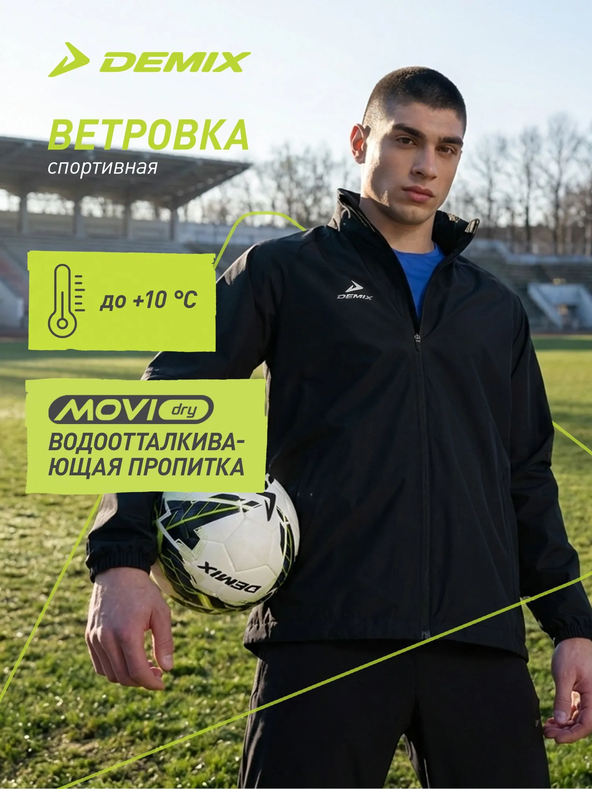

Бег
Для регулярных пробежек начните с удобной обуви и одежды, которая не ограничивает движение.
Посмотреть товарыНесколько ориентиров, которые помогут начать выбор под свой тип активности.
Для регулярных пробежек начните с удобной обуви и одежды, которая не ограничивает движение.
Посмотреть товары
Подберите базовый инвентарь в зависимости от упражнений: гантели, резинки и защитную экипировку.
Посмотреть товары
Для занятий на улице пригодятся ветровка, вместительный рюкзак и бутылка для воды.
Посмотреть товары
После нагрузки оставьте время на восстановление; массажный ролл можно включить в домашний комплекс.
Посмотреть товарыОткройте каталог и сравните товары или оставьте вопрос через форму.